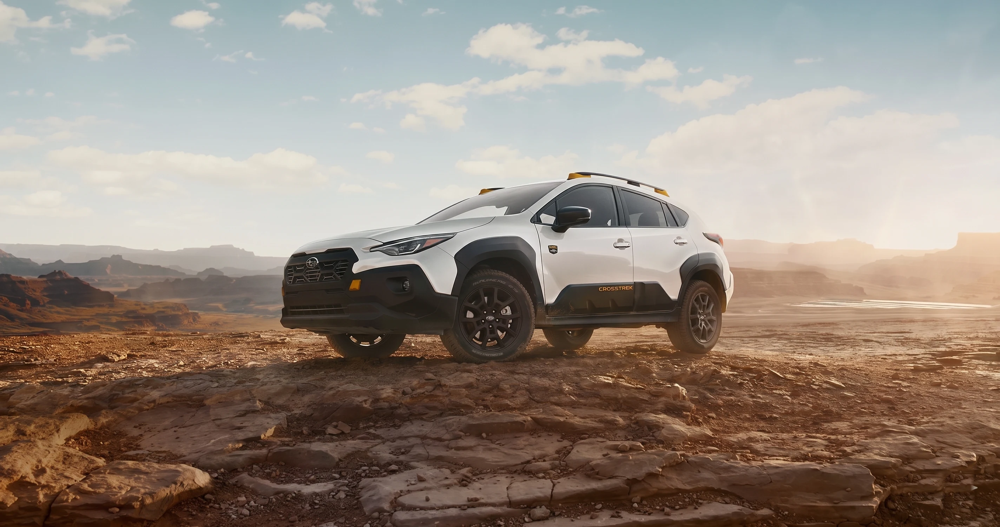
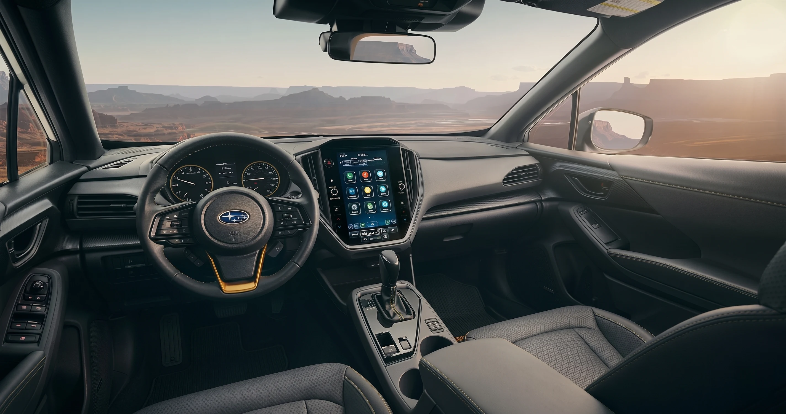

152 hp2.0L · Crosstrek
Crosstrek 2.0L
Roughly 152 hp, 145 lb-ft [PENDING]. Available on Base and Premium. Highest-mileage non-hybrid option.
Crosstrek inventoryIf you have narrowed your next Subaru down to the Crosstrek or the Forester, you are already comparing the two best-selling vehicles in the lineup. Both share Symmetrical All-Wheel Drive, EyeSight, a boxer engine, and 8.7 inches of ground clearance. The differences are size, cargo, rear-seat space, towing, and how each fits a Prescott driver's week. We will not tell you one is better. We will tell you which is better for you.

FINDLAY SUBARU PRESCOTT · ED. 26This guide is written for buyers who want a clear, honest, side-by-side answer before walking the lot at 3230 Willow Creek Road. The Crosstrek is the smaller of the two, built on Subaru's Global Platform shared with the Impreza, sized like a tall hatchback, and aimed at solo drivers, couples, and anyone who wants Subaru capability in a vehicle that still parks comfortably in a compact downtown Prescott spot.
The Forester is the larger, taller, more upright compact SUV. It has a longer wheelbase, more rear-seat legroom, a bigger cargo hold, a higher towing rating, and a noticeably more open cabin feel, especially for back-seat passengers and for loading bulky gear like golf bags, hiking packs, or a folded walker.
By the Findlay Subaru Prescott editorial team, with review by [PENDING: Sales Manager byline]. Drafted May 12, 2026 · target publish June 15, 2026.
This is where most buyers feel the difference first. The Forester feels like a small SUV. The Crosstrek feels like a tall, capable hatchback. Specs below are pulled from Subaru of America patterns for the current generation; values marked [PENDING] will be confirmed against the 2026 MY configurator before publish. For VIN-level confirmation on any spec, call Sales at 928-491-2260 and ask for the build sheet.
The Forester is about seven inches longer than the Crosstrek and roughly four to five inches taller. That height is the source of the Forester's signature openness. You sit higher, the windows are larger, and the rear hatch opens onto a more vertical cargo wall. The Crosstrek's hatchback proportions make it easier to thread into a compact downtown spot near Whiskey Row or the Courthouse Square farmer's market.
Cargo capacity. Crosstrek holds approximately 20.8 cu ft behind the second row, expanding to roughly 54.7 cu ft with the rear seats folded [PENDING: confirm 2026 MY]. Forester holds approximately 26.9 cu ft behind the second row, expanding to roughly 74.4 cu ft folded [PENDING: confirm 2026 MY]. In practical terms: two full-size golf bags fit comfortably in the back of a Forester without folding seats. In a Crosstrek, you can fit two bags but you will likely want to drop one half of the 60/40 rear seat, particularly if your bag has a cart attached.
Rear-seat space. The Forester wins on rear legroom and rear headroom. For grandchildren in booster seats, the difference is negligible. For two full-size adult passengers in the back on a drive to Sedona or Flagstaff, the Forester is the more comfortable cabin. The Crosstrek's rear seat is usable for two adults, but the knee room and shoulder room are noticeably tighter on longer drives.
Visibility and step-in height. Both vehicles offer the upright command seating Subaru drivers expect. The Forester's lower door sills and taller roof make ingress and egress easier, a point that matters more for retirees who do not want to lower themselves into a car or climb up into a truck. The Crosstrek sits a touch lower at the hip point but still gives a clear view over the hood and to the corners.
Crosstrek: ~176.4 in long, ~62.4 to 63.6 in tall, ~3,300 lb [PENDING]. Forester: ~183.3 in long, ~67.5 to 68.1 in tall, ~3,600 lb [PENDING]. Wheelbase runs about 105.1 in on both, though the Forester redesign may differ [PENDING]. Ground clearance is 8.7 in on both, more than most car-based crossovers on the market.
Both vehicles pair their boxer engines with Subaru's Lineartronic CVT and Symmetrical AWD. Neither is fast in the traditional sense; they are honest about it. They are tuned for usable torque from a standing start, predictable highway passing, and traction that you will appreciate the first time you encounter a wet wash on Highway 89 after a summer monsoon.
Engines. Crosstrek 2.0L runs roughly 152 hp and 145 lb-ft [PENDING: confirm 2026 MY] and is available on Base and Premium trims. Crosstrek 2.5L runs roughly 182 hp and 178 lb-ft [PENDING] and is standard on Sport, Limited, and Wilderness. Forester is 2.5L only for the current generation, roughly 180 hp and 178 lb-ft [PENDING], with a turbocharged variant returning on the redesigned Forester Hybrid and performance-oriented trims [PENDING: confirm 2026 MY Forester turbo / hybrid availability].
All-Wheel Drive and X-MODE. Both vehicles offer Symmetrical AWD standard. Wilderness trims on both Crosstrek and Forester add dual-function X-MODE (Snow/Dirt and Deep Snow/Mud) plus retuned dampers and skid plates. Non-Wilderness trims still include X-MODE on higher-equipped variants. For typical Prescott weather, dry most of the year, monsoon-flooded streets in July and August, and occasional snow on Mingus Mountain, the standard AWD with X-MODE is more than capable.
Ground clearance and approach angles. Both vehicles are rated at 8.7 inches of ground clearance. The Wilderness variants of each add taller approach and departure angles, more aggressive tires, and revised gearing. If you actually plan to take Forest Service roads to a fishing hole near Lynx Lake or up to the Bradshaw Mountains, the Wilderness trim is worth a serious look on either model.
Towing. Crosstrek tows 1,500 lb on standard trims and 3,500 lb on Wilderness [PENDING: confirm 2026 MY]. Forester tows 1,500 lb on standard trims and 3,000 lb on Wilderness [PENDING]. For a small utility trailer, a single jet ski, or a folding tent trailer, both are competent. For a small fishing boat or a teardrop camper, the Wilderness trim of either vehicle is the version to consider. For a full travel trailer or a horse trailer, you are outside the design envelope of both.
Roughly 152 hp, 145 lb-ft [PENDING]. Available on Base and Premium. Highest-mileage non-hybrid option.
Crosstrek inventory3,500-lb tow rating [PENDING], the highest in the comparison. Daily-driver footprint, trailer headroom.
Wilderness lineupRoughly 182 hp, 178 lb-ft [PENDING]. Standard on Sport, Limited, Wilderness. Closes the 5,400-ft elevation gap.
Crosstrek inventoryRoughly 180 hp, 178 lb-ft [PENDING]. Standard across the lineup. Higher low-rpm torque eases the daily climb.
Forester inventorySnow/Dirt and Deep Snow/Mud retune throttle and torque for low-traction surfaces.
Symmetrical AWD3,000-lb tow rating [PENDING]. Larger interior than Crosstrek; the more flexible package for RV trips.
Call 928-491-2260Subaru EyeSight is standard on every 2026 Crosstrek and every 2026 Forester. That is the single most important point of agreement: you do not have to upgrade to get the safety story Subaru is known for. Infotainment and driver-assist content scales with the trim on both vehicles.
EyeSight is the brand's stereo-camera-based driver assist suite. It includes Adaptive Cruise Control, Lane Centering, Pre-Collision Braking, Pre-Collision Throttle Management, and Lane-Departure and Sway Warning. Both vehicles also include Automatic Emergency Steering [PENDING: confirm scope on 2026 Crosstrek vs Forester], Blind-Spot Detection with Rear Cross-Traffic Alert (Premium trims and above), and a rear-seat reminder.
For retirees, three EyeSight features earn their cost every day: Adaptive Cruise Control on the I-17 climb to Flagstaff, Lane Centering during long monsoon drives where visibility is reduced, and Pre-Collision Braking in stop-and-go traffic on Highway 69. These are not gimmicks. They are the reason Subaru repeatedly earns top-tier IIHS safety scores. Confirm current designations at iihs.org.
Crosstrek base trims ship with dual 7-inch displays; higher Crosstrek trims add the 11.6-inch portrait touchscreen. Forester ships with the 11.6-inch portrait touchscreen standard on Premium and above [PENDING: confirm 2026 MY base-trim infotainment on both vehicles]. Both support wireless Apple CarPlay and Android Auto on the 11.6-inch system [PENDING: confirm wireless vs wired by trim for 2026 MY], over-the-air software updates on the 11.6-inch system, and SiriusXM and HD Radio. Higher trims on both add a Harman Kardon premium audio system.
The most meaningful jump in driver-assist content typically happens at the Limited trim on both vehicles. Blind-Spot Detection, Rear Cross-Traffic Alert, and Reverse Automatic Braking are commonly bundled there [PENDING: confirm exact 2026 MY trim-walk by feature]. If those features matter to you, and for active retirees they often do, start your trim comparison at Limited.
You are not choosing between two different safety stacks here. You are choosing between two different sized vehicles that share the same one. The trim level you pick (Premium, Sport, Limited, Wilderness) determines how much of the EyeSight feature ladder you get, not the model.
"I came in thinking I wanted the smaller Crosstrek. After ten minutes in the back seat of a Forester at our showroom, my wife told me she wanted the Forester. I drive solo for work; we ride together on weekends. Hers is the seat that needed to be comfortable. Different week, different answer." Paraphrased · recurring theme in cross-shop conversations on the showroom floor at 3230 Willow Creek Road · direct verbatim pending customer permission
The figures below are based on Subaru of America's published MSRP for the 2026 model year. They exclude destination, taxes, fees, and any incentives. For current Findlay Subaru Prescott pricing and any active offers, call 928-491-2260 or stop by 3230 Willow Creek Road. The price you see is the price you pay. [PENDING: confirm full 2026 MY MSRP table at time of publish. Values shown are placeholders flagged for fact-check against Subaru of America press materials.]
| Trim | CrosstrekSubaru | ForesterSubaru | Honest readPrescott context |
|---|---|---|---|
| Base | $[PENDING] | $[PENDING] | Crosstrek is the lowest entry point in the lineup |
| Premium | $[PENDING] | $[PENDING] | Gap holds; same delta as Base |
| Sport | $[PENDING] | $[PENDING] | Sport adds styling content on both |
| Limited | $[PENDING] | $[PENDING] | Gap narrows; driver-assist content jumps here |
| Wilderness | $[PENDING] | $[PENDING] | Lands in a similar pricing band on both models |
| Touring | n/a | $[PENDING] | Forester-only top trim |
| Hybrid | [PENDING availability] | [PENDING availability] | Forester Hybrid returning on 2026 redesign [PENDING] |
| Live Prescott inventory | See Crosstrek → | See Forester → | Both on the lot at 3230 Willow Creek |
The pattern. Crosstrek undercuts Forester by a few thousand dollars at the base trim, the delta narrows at the top, and the Wilderness trims of both land in a similar pricing band. Expect roughly a [PENDING: exact 2026 MY MSRP delta] difference between base trims, with the gap narrowing on top trims.
Local Prescott pricing. For local Prescott market pricing, manufacturer-to-dealer incentives, and any current Subaru of America national programs, call our sales team at 928-491-2260. We will quote you straight, and the price you see is the price you pay.
How we sell. Findlay Subaru Prescott uses a non-commissioned sales staff. Our Product Specialists are not paid per-unit, so the conversation is genuinely about finding the right vehicle for you, not about closing the higher-MSRP option. If, after the test drive, the Crosstrek is the right car for your week and the Forester is not, we will tell you. The reverse is equally true.
Shop from home. Findlay Subaru Prescott offers the Subaru Shop From the Comfort of Home program and a full Buy from Home flow: value your trade, apply for financing, add service plans, and schedule delivery online. Visit findlaysubaruprescott.com or call 928-491-2260 to start.
Specs and pricing verified May 12, 2026 against Subaru of America and IIHS. Items marked [PENDING] will be confirmed before publication.
There is no wrong answer between the two. There is only a right answer for your week. Read both lists below. The vehicle that fits more of your bullets is your answer. If you're tied, the rear seat and the cargo area are the tiebreakers most buyers actually feel.
Both ship standard with Symmetrical AWD and Subaru EyeSight. You do not have to upgrade to get the safety and traction story Subaru is known for. The right answer comes down to size, seating posture, and what you plan to carry.
Browse current Crosstrek inventory → or browse current Forester inventory →. Or call Sales at 928-491-2260 and we'll tell you what's actually on the lot in Prescott this week.
This is the section we wrote for the buyer we see most often at 3230 Willow Creek Road. You are 60 to 75, you have either retired or are close to it, you moved to Prescott (or have lived here for years), and you want a vehicle that is reliable, safe, comfortable, and right-sized for the life you actually live.
If golf is a regular part of your week (Antelope Hills, Prescott Lakes, StoneRidge, Talking Rock), the Forester is the easier vehicle for two bags plus a pull cart or an electric trolley without folding rear seats. The Crosstrek will do it, but you will be flexing the 60/40 rear seat more often. For hiking the Peavine, the Iron King Trail, or the Granite Mountain Wilderness trails, both vehicles are excellent trailhead vehicles. The 8.7 inches of ground clearance shared by both means most Forest Service roads to a Bradshaw Mountains trailhead are not a concern.
For winter visits to the Phoenix area, summer escapes to Flagstaff, or a quiet week at an RV park near Mormon Lake or Lake Mary, the Forester's larger interior volume and modestly higher tow rating on standard trims [PENDING: confirm 2026 MY] is the more flexible package. The Crosstrek Wilderness's 3,500-lb tow rating is the exception. It can handle a small teardrop or a light utility trailer.
For the trip to the Frontier Village Costco, the Yavapai Regional Medical Center, the Granite Creek Park dog park, or the Prescott Valley Civic Center, either vehicle is right-sized. The Crosstrek is easier to park downtown. The Forester is easier to enter and exit.
Prescott sits at roughly 5,400 feet of elevation. Both engines are normally aspirated, which means both will lose a small amount of perceived power at altitude. The Forester's slightly higher torque rating at low rpm makes the daily climb less noticeable than in the Crosstrek 2.0L. The 2.5L Crosstrek closes most of that gap. Both vehicles, paired with Symmetrical AWD, handle the occasional snow day on Senator Highway or up toward Lynx Lake with ease.
Both vehicles are supported by the same Findlay Subaru Prescott Service Department. Express Service runs Monday through Saturday, 8 AM to 5 PM, walk-ins close at 4 PM Monday through Friday. Three Subaru Certified Master Technicians on staff (Nickolas Popov, Justin Furber, and David Greenwood) service both vehicles with genuine Subaru parts. The Service number is 928-719-3380, the Parts number is 928-719-2612, and the waiting room has two massage chairs, snacks, beverages, and a popcorn machine.
For Spanish-speaking customers, ask for Gabriel Madel (Product Specialist, bilingual) or Jesus Soria (Service Advisor, bilingual). Both are flagged on our staff page as "Habla Español."
If you're weighing the Forester against the new Forester Hybrid, our Subaru Forester Hybrid for Prescott explainer covers that internal call.

The Crosstrek is the smaller, lower-entry, easier-to-park option for solo drivers and couples. The Forester is the larger, more upright SUV for buyers who regularly carry adult passengers, golf bags, or a folded walker. Both share Symmetrical AWD, EyeSight, an 8.7-inch ground clearance, and the same Findlay Subaru Prescott Service Department.
Non-commissioned sales team. Our Product Specialists are paid on customer satisfaction, not per unit. The price you see is the price you pay, with no hidden fees. Bilingual Product Specialist Gabriel Madel on Sales; Jesus Soria on Service. Subaru Loves to Care partner with the Leukemia & Lymphoma Society.
3230 Willow Creek Road, Prescott AZ 86301. Sales hours Mon–Sat 8 AM to 7 PM, closed Sunday. Express Service Mon–Sat 8 AM to 5 PM, walk-ins close 4 PM Mon–Fri.
Sales: 928-491-2260.
Service: 928-719-3380.
Parts: 928-719-2612.
Both vehicles use the same Symmetrical All-Wheel Drive system and offer 8.7 inches of ground clearance. In direct snow performance the two are functionally similar. The Forester offers slightly more interior space for carrying chains, a shovel, blankets, and extra layers. The Crosstrek Wilderness adds a more aggressive tire and revised AWD tuning, a strong choice for buyers who regularly drive up to Mingus Mountain or the higher Bradshaw Mountains. For typical Prescott winters, either vehicle is more than capable.
The Crosstrek generally edges out the Forester by a small margin on EPA-rated combined fuel economy because the Crosstrek is lighter and slightly smaller. The current generation Crosstrek 2.0L is the highest-mileage non-hybrid option in the comparison [PENDING: confirm 2026 MY EPA figures for Crosstrek 2.0L vs Forester 2.5L]. If a Forester Hybrid is offered in the 2026 model year [PENDING availability], that variant changes the comparison.
In the Forester, yes, comfortably. In the Crosstrek, you can fit two bags, but most golfers will choose to fold half of the 60/40 rear seat, especially if a bag includes a cart attachment. For weekly golfers, the Forester is the easier vehicle.
Yes. Subaru EyeSight is standard on every 2026 Crosstrek and every 2026 Forester. That includes Adaptive Cruise Control, Lane Centering, Pre-Collision Braking, and Pre-Collision Throttle Management. Blind-Spot Detection and Rear Cross-Traffic Alert are typically added at the Premium or Limited trim [PENDING: confirm 2026 MY trim-walk].
The Forester. It has a lower door sill and a taller roof, which together make standing up out of the seat (rather than climbing out) the natural motion. For buyers with knee, hip, or back concerns, the Forester is the easier vehicle. The Crosstrek is still better than most sedans for ingress and egress, but the Forester is the more accommodating of the two.
Both vehicles carry Subaru's standard new-vehicle warranty: 3-year / 36,000-mile basic limited and 5-year / 60,000-mile powertrain [PENDING: confirm 2026 MY warranty terms. Subaru of America has historically maintained this structure]. Subaru Certified Pre-Owned vehicles carry a separate extended warranty. Ask about Findlay Subaru Prescott's Certified Pre-Owned inventory and the Express Service program at 928-491-2260.
Yes. Findlay Subaru Prescott offers the Subaru Shop From the Comfort of Home program and a full Buy from Home flow: value your trade, apply for financing, add service plans, and schedule delivery online. Visit findlaysubaruprescott.com or call 928-491-2260 to start.
By the Findlay Subaru Prescott editorial team, with review by [PENDING: Sales Manager byline. Mark Falk is GSM, John Ward is Sales Manager. Confirm preferred reviewer attribution] · drafted May 12, 2026 · target publish June 15, 2026. Editorial Gate H sign-off pending.
Researched and drafted with AI assistance. Fact-checked against primary sources: Subaru of America, IIHS, EPA, and the Findlay Automotive Group corporate record. All 2026 Crosstrek and Forester specifications will be confirmed against the current Subaru.com configurator before launch. Items marked [PENDING:] will be resolved with verified manufacturer or dealer-supplied data before publication.
All specs reflect Subaru of America patterns as of May 12, 2026. Local observations reflect Findlay Subaru Prescott showroom and service-department experience with active retirees in the Yavapai region. Address, phones, and hours sourced from FACTS.md; address discrepancy resolved (prompt specified 86305, FACTS.md canonical 86301, used FACTS.md).
Non-commissioned sales team. Same showroom, same morning. When you visit 3230 Willow Creek Road, we will let you sit in both vehicles, drive both, and load gear into both. We will quote you straight on both, and the price you see is the price you pay.